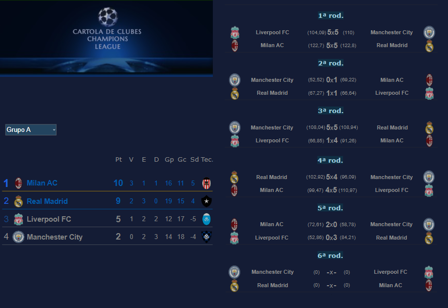

Campeonato de Cartola
A vitória no cartola é o sucesso do seu time!


Redação Cartola - 01/10/2024 - 09h55min 
Findo o recesso da Série "D", é hora dos 16 clubes classificados para as oitavas-de-finais decidirem seus destinos no grande objetivo do ano: o tão sonhado acesso à Sèrie "C" 2025.
Apesar de já classificado, a sexta e última rodada da primeira fase marcará a disputa dos "galáticos" contra o Milan do "Milaneros" pela primeira colocação do grupo. Para tanto, neste confronto, ao Real Madrid só a vitória interessa, já que o Milan entra nesta próxima quinta-feira com um ponto a mais que os merengues (10 pontos), precisando apenas de um empate para assegurar a liderança do quarteto. Lembrando que a liderança do grupo confere o privilégio de jogar contra o segundo colocado do grupo B com a vantagem de dois empates.
No grupo C temos outros dois clubes classificados para o mata-mata: Internazionale de Milão do "Cearúcho FC", com 10, e o Borrussia Dortumund do "SER XANTOSKA", com 7, restando Manchester United (Anderson United) e Atlético Madrid (XEIROSO FC) já sem chances de classificação
No Grupo "D" temos o Ajax do cartoleiro "UGÃO F.C." como dono da melhor campanha da fase de grupos, com cinco vitórias em cinco jogos, restando ao Chelsea (Colchonero BH), com 7, e ao PSG (VMRB), com 6, lutar pela segunda colocação do grupo no confronto direto nesta última rodada.
Neste quarteto é onde a útima rodada apresenta os contornos mais dramáticos, onde três clubes (Arsenal, Juventus e Barcelona) lutam pelas duas vagas em aberto, com destaque para o confronto direto entre Arsenal contra o Barça, enquanto a Juventus entra em campo contra o saco-de-pancadas Tottenham Hotspurs, único clube "zerado" nesta fase de grupos
Campeão leva 330 reais e 70pts no ranking geral de treinadores, e o vice, 100 reais. Além disso, campeão e vice classificam-se gratuitamente para a disputa do Mundial de Clubes de Cartola, com o vice iniciando desde a primeira fase, enquanto o campeão, a exemplo do vencedor da Libertadrores, ingressa diretamente nas semifinais da competição.
O torneio pode ser acessado via menu "campeonatos estrangeiros". Depois, é só clicar sobre a imagem da competição. Ou então clicando neste atalho.